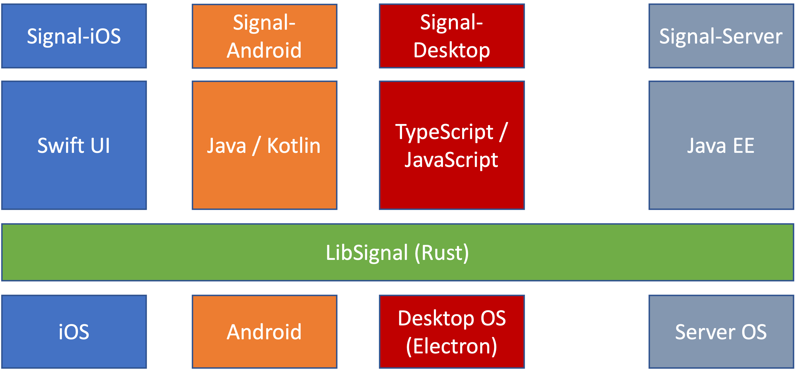

2. Rust app dev offers clear business advantages
There is a strong business case to be made for application development in Rust. Several existing commercial applications have already been "written in Rust," but Rust is only used to implement an internal business logic layer; the entire remainder of the app (e.g., frontend UI and UX) is written using different platform-specific native languages and SDKs. This leads to significant fragmentation and redundant development effort on each platform they wish to support, i.e., wasted expense.
One such example is Signal, a popular open-source messaging app focused on user privacy.
As pictured below, Signal maintains multiple separate repositories for each of its client apps on Android, iOS, and desktop, as well as for its server.
The Rust component of Signal is the shared libsignal crate, which implements the main Signal protocol functionality in a platform-agnostic manner with multiple bindings to other platform-native languages like Swift, Typescript, and Java.

Each of these app repositories are non-trivial in size: 450K+ LoC on iOS, 350K+ LoC on Android, and 250K+ LoC on desktop. The only reason the Signal desktop app is not even more complex and large is because it is built atop the Electron framework, which is known to be an inefficient resource hog with poor accessibility support. However, building desktop apps on Electron is still the default choice because it is easy and familiar, and at the time there were no viable alternatives to the much more expensive option of per-platform native apps on Windows, macOS, and Linux.
The main disadvantage of having multiple separate app repos is that it is incredibly challenging maintain consistency in both appearance and behavior. General maintainability also becomes more tedious, as bugs that manifest differently across platforms must be addressed on an individual basis. To their credit, Signal has actually done an impressive job of just that, with help from the community, though naturally some minor issues do slip through the cracks. For example, Signal on Android allows placing secure chats behind a screen lock (e.g., using biometrics), but desktop Signal does not offer that. Signal on Android cannot search only a single chat only, while other platforms support that filter. Mobile Signal apps offer contact-specific notifications, while desktop does not. The iOS app does not allow choice of fonts or changing font sizes and has different defaults than others, e.g., for embedded link previews, WiFi vs. cellular data usage, etc.
Another similar motivating example is Element, a first-party Matrix chat client that is also implemented separately on each platform, including Android, iOS, desktop, and web. Unfortunately, the maintenance burden has proven difficult to handle, with Element apps receiving moderately poor user reviews (3.8⭐ on Google Play, 3.5⭐ on Apple's App Store) due to inconsistent behavior, bugs, and slow performance. This undoubtedly stems from the effort required to accommodate the idiosyncrasies of each platform, which steals developer focus away from improving the main app-level features and experience.
Element themselves have acknowledged this issue and began developing a new set of applications called Element X, with a focus on sharing code across platforms via a shared Matrix Rust SDK. They are also exploring a new design system called Compound that aims to establish consistent UI component implementations shared across iOS, Android, and the web. However, both Compound and Element X apps on Android and iOS still exist separately and are implemented with platform-specific UI frameworks, e.g., Jetpack Compose and SwiftUI.
Element claims that the Element X apps are up to 6000 times faster than the legacy Element apps, due in part to Rust:
Our new Rust SDK makes development faster and more consistent across the Android and iOS apps, while providing a super-speedy and high quality implementation thanks to Rust’s legendary language safety features.
Although the new sliding sync protocol is likely responsible for the majority of those performance gains, this statement speaks to the attitude surrounding Rust ‚Äî that switching to Rust will bring ü홬†huge gains¬†üí™.
In general, a business stands to gain several competitive advantages from using a cross-platform Rust app dev toolkit, as listed below. These mostly overlap with the benefits of switching to Flutter1, though as shown later, developers vastly prefer using Rust over Dart, Flutter's required language.
- Ability to deliver a more consistent experience to customers across platforms.
- Ease of attracting talented developers due to a modern stack and better team culture/morale1.
- Elimination of redundant development effort across platforms, which:
- Saves money due to higher productivity,
- Results in a faster time to market, and
- Allows developers to focus more on UI/UX quality.
In conclusion, these favorable Rust experiences, together with the challenges faced by Signal and Element with maintaining separate per-platform app repositories, clearly motivate the need for a multi-platform application development toolkit in Rust.
A survey by Very Good Ventures found that businesses reported these benefits when switching to Flutter for app development.